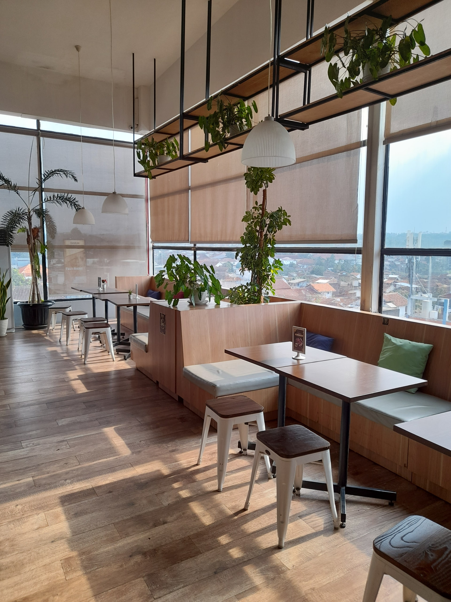

一樓大廳區
左側為餐廳接待區，寬敞明亮的用餐空間，
適合情侶和朋友聚餐打卡的好地點，並且提供下午茶及甜點。

一樓落地窗區
明亮採光及開闊的空間視覺，座位多採用高腳椅居多，適合上班族。

二樓景觀包廂區
完美的俯瞰都市的絕佳視野，適合家庭聚餐、商務會議的景觀包廂。

頂樓戶外景觀區A
採用多種植栽綠化環境降低室內溫度，座位由中間接梯分層兩側，適合新人結婚的婚宴場地。

頂樓戶外景觀區B
採用透明綠建材，可有效的控制室內溫度及提供明亮的採光，並布置綠色植栽提升空氣品質，適合大型商務展覽及公司尾牙。
-
VeganFood 用餐環境分類:
-
一樓大廳區域: 適合情侶及朋友聚餐。
-
一樓落地窗區: 適合上班族辦公及用餐。
-
二樓景觀包廂區: 適合家庭聚餐及商務會議。
-
頂樓戶外景觀區A: 適合新人婚宴場地，必須提前預訂。
-
頂樓戶外景觀區B: 適合大型商務展覽及公司尾牙
- 立即點餐